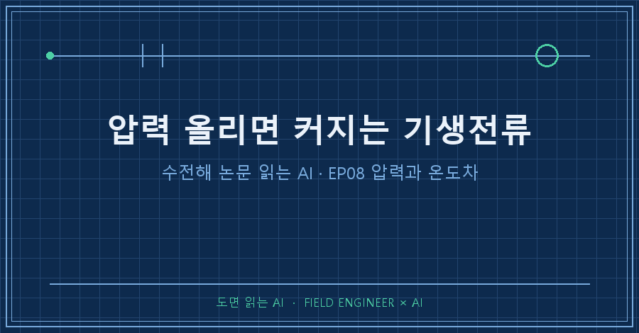
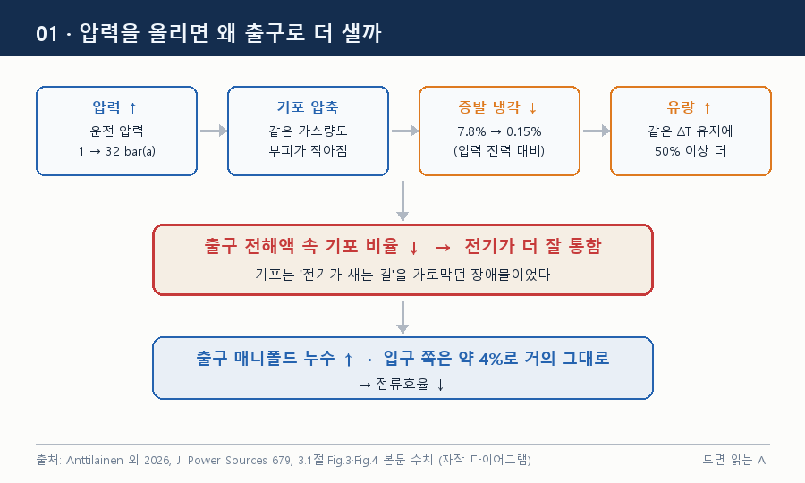
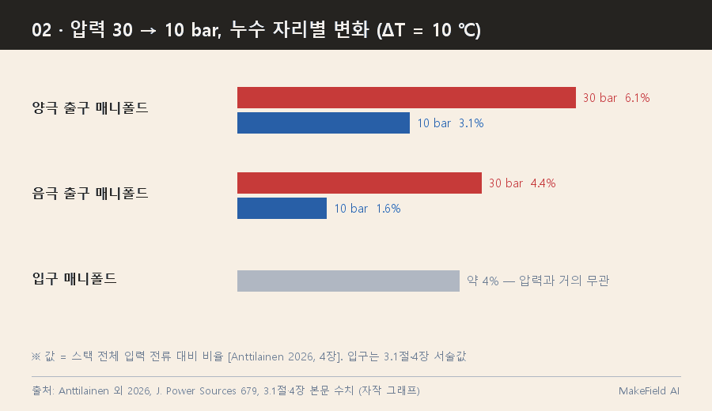
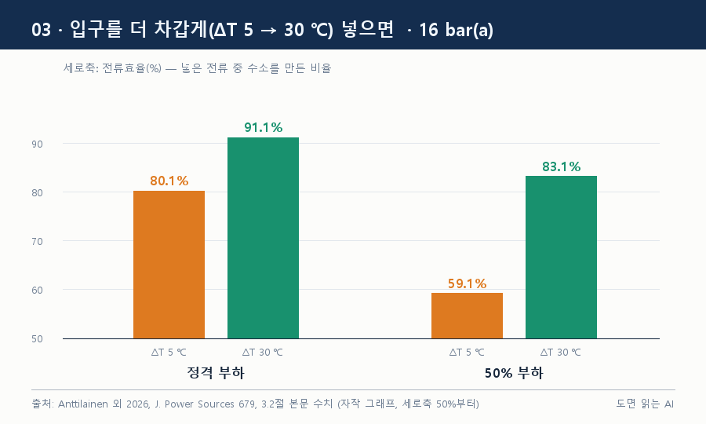
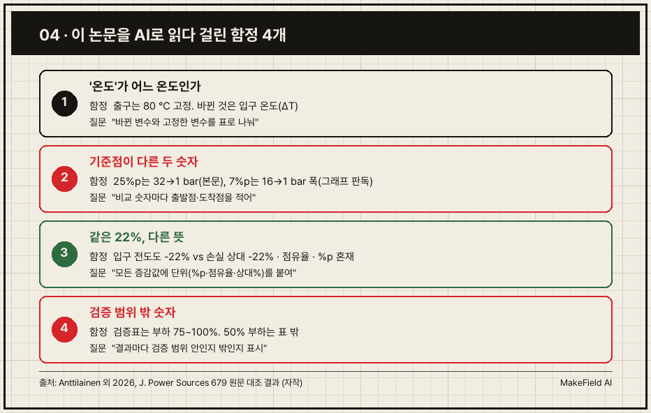

수전해 압력을 올리면 기생전류가 커지는 이유는 출구의 기포가 줄어서입니다. 기포는 전기가 새는 길을 막는 장애물인데, 압력이 기포를 눌러 작게 만들면 그 길이 뚫려요 [Anttilainen 2026, 3.1절].
한 시뮬레이션에서 50% 부하일 때 압력을 32 bar에서 1 bar로 낮추자 전류효율이 25%p 가까이 올랐습니다 [Anttilainen 2026, 3.1절].
'논문 읽는 AI' 8편은 설계가 아니라 운전 이야기예요. 셀 수가 정해진 뒤에도 같은 스택을 몇 bar, 몇 ℃로 돌리느냐에 따라 새는 양이 달라집니다. 지난 편과 같은 핀란드 LUT대 연구팀이 2026년 4월 Journal of Power Sources에 공개한 오픈액세스 논문을 읽었어요.
1. 이 논문은 무엇을, 어떻게 풀었나요
압력과 온도가 스택 안 기생전류를 어떻게 바꾸는지 함께 따진 연구는 없었다는 게 출발점입니다. 공장 단위 선행연구는 1→32 bar에서 손실이 거의 두 배라고 했지만, 스택 내부 누수 경로는 모델에 없었어요 [Anttilainen 2026, 1장].
- 기생전류(stray·shunt current): 반응 면을 거치지 않고 전해액 통로(포트·매니폴드)로 빠져나가는 전류. 수소 대신 열이 됩니다.
- 전류효율: 넣은 전류 중 실제로 수소를 만든 비율.
- ΔT(입출구 온도차): 들어가는 전해액과 나오는 전해액의 온도 차이. 출구는 80 ℃로 고정하고, 입구를 얼마나 차갑게 넣느냐로 ΔT를 바꿉니다 [Anttilainen 2026, 2.4절].
방법은 전기 회로 모델 + 열 수지 모델이에요. 누수 전류가 열을 만들고, 열이 입구 온도를, 입구 온도가 전도도를, 전도도가 다시 누수를 정하니 입구 온도가 수렴할 때까지 반복 계산합니다 [Anttilainen 2026, 2.4절].
| 항목 | 기준값 |
|---|---|
| 스택 | 산업용 알칼라인 수전해, 163셀 |
| 공급 전류 | 4567 A |
| 운전 압력 | 16 bar(a) |
| 출구 온도 / ΔT | 80 ℃ 고정 / 10 ℃ |
| 전해액 | KOH 25 wt%, 셀당 0.076 kg/s |
(출처: [Anttilainen 2026, Table 1])
정격점 기생전류 16%에 맞춰 조정한 뒤 [Anttilainen 2026, 2.5.1절] 실측 7개 지점과 비교하니 전류효율 상대오차는 −0.2~1.2%였어요 [Anttilainen 2026, Table 2].
2. 수전해 압력을 올리면 기생전류가 왜 커지나요
기포가 작아지고 수증기가 줄어, 출구 전해액이 전기를 더 잘 통하게 되기 때문입니다 [Anttilainen 2026, 3.1절]. 고리 셋으로 이어져요.

1. 압력이 기포를 눌러 부피를 줄입니다.
2. 수증기가 덜 생겨 증발로 빠지던 열이 줄어요. 정격 부하에서 증발 냉각은 1 bar일 때 스택 입력 직류 전력의 약 7.8%, 32 bar일 때 약 0.15%입니다 [Anttilainen 2026, 3.1절].
3. 못 빠진 열을 빼려면 전해액을 더 흘려야 해요. 같은 ΔT를 지키려면 1→32 bar 구간에서 정격은 50% 넘게, 부분부하는 최대 90%까지 유량이 늘어납니다 [Anttilainen 2026, 3.1절].
기포는 줄고 액체는 늘었으니 출구 전도도가 올라갑니다. 새는 자리도 정해져 있어요. 입구 쪽은 압력과 거의 상관없이 약 4%이고, 바뀌는 건 출구 매니폴드입니다 [Anttilainen 2026, 4장].

ΔT 10 ℃에서 30 bar를 10 bar로 낮추면 양극 출구 매니폴드는 6.1%→3.1%, 음극 출구는 4.4%→1.6%로 줄어요. 둘 다 전체 입력 전류 대비 값입니다 [Anttilainen 2026, 4장].
3. 입구를 더 차갑게 넣으면 얼마나 줄어드나요
입구 온도를 낮춰 ΔT를 키우면 누수가 줄어듭니다. 16 bar에서 ΔT를 5 ℃에서 30 ℃로 키우면 전류효율이 정격 부하 80.1%→91.1%, 50% 부하 59.1%→83.1%로 올라요 [Anttilainen 2026, 3.2절].

이유는 두 갈래입니다 [Anttilainen 2026, 3.2절].
- 입구 쪽: 차가운 전해액은 전기가 덜 통해요. ΔT 10→30 ℃에서 입구 전도도가 약 22% 떨어집니다.
- 출구 쪽: 차가운 전해액이 열을 더 실어 나르니 유량을 줄여도 됩니다. 액체가 줄면 출구 기포 비율이 올라 전도도가 양극 약 63%, 음극 약 76% 떨어져요.
논문이 짚은 운전 손잡이는 셋입니다.
| 손잡이 | 방향 | 효과 | 근거 |
|---|---|---|---|
| 운전 압력 | 낮춘다 | 출구 매니폴드 누수 감소 | [Anttilainen 2026, 3.1절] |
| ΔT | 키운다(입구를 차갑게) | 입구·출구 누수 모두 감소 | [Anttilainen 2026, 3.2절] |
| 전해액 유량 | 부하에 맞춰 줄인다 | 고정 유량 대비 50% 부하에서 2.0~7.6%p 차이 | [Anttilainen 2026, 3.2.1절] |
손잡이끼리 바꿔 낄 수도 있어요. 20 bar·ΔT 30 ℃가 10 bar·ΔT 10 ℃보다 전류효율이 높습니다 [Anttilainen 2026, 4장]. 압력을 못 낮추면 ΔT로 메울 수 있다는 뜻이에요.
4. 이 논문의 한계는 무엇인가요
- 정상상태 시뮬레이션이라 급격한 출력 변동·냉간 기동은 다루지 않아요 [Anttilainen 2026, 2.5.2절].
- 기포와 액체가 같은 속도로 흐른다고 가정했어요. 기포 비율에 상한(0.5·0.75)을 걸면 압력을 낮춰도 효율이 더 안 오르는 평탄 구간이 생겨요. 0.5 상한 예시에서 정격 부하 전류효율은 약 85%에 머뭅니다 [Anttilainen 2026, 3.1.1절]. 실측 기반 상한은 향후 과제로 남겼어요 [Anttilainen 2026, 5장].
- 냉각 능력과 기체 배출용 최소 유량 때문에 ΔT를 무한정 키울 수 없고, 약 40 ℃부터는 이득도 미미합니다 [Anttilainen 2026, 3.2절].
- 펌프·전력변환기 같은 보조설비는 모델 밖이고, 산업 데이터는 공개되지 않았어요 [Anttilainen 2026, 2.5.2절·Data availability].
- 압력을 낮추면 뒤단 압축 부담이 늘어요. 그래서 저자들은 최저 압력이 곧 최적이라 하지 않고, 25 bar를 넘으면 손실이 불균형하게 커진다고만 적었습니다 [Anttilainen 2026, 3.1.1절].
5. AI 요약에서 어떤 숫자가 틀어졌나요
이제 읽은 방법입니다. PDF를 텍스트로 뽑아 AI에게 읽히고, 그래프 쪽은 이미지로 띄워 본문 숫자와 대조했더니 함정이 네 개 나왔어요.

'온도'가 어느 온도인가. "온도를 올리면 누수가 커진다"는 요약은 반만 맞아요. 출구는 80 ℃ 고정이고, 바뀐 건 입구 온도입니다 [Anttilainen 2026, 2.4절]. 최고 온도를 올린 실험이 아니에요.
기준점이 다른 두 숫자. 결론은 "정격 최대 7%p, 50% 부하 최대 25%p"를 한 문장에 묶습니다 [Anttilainen 2026, 5장]. 본문에서 25%p는 32→1 bar 기준이에요 [Anttilainen 2026, 3.1절]. 7%p는 Fig.2 그래프로 읽으면 16→1 bar 폭에 맞습니다(그래프 판독). 둘을 나란히 놓고 배율을 내면 틀려요.
같은 22%, 다른 뜻. 위에서 쓴 입구 전도도 22% 감소와 별개로, 4장에는 1 bar에서 ΔT를 10→30 ℃로 키우면 전체 기생전류 손실이 상대적으로 22% 준다는 값이 또 나와요(10 bar에선 약 40%) [Anttilainen 2026, 4장]. 여기에 6.1%→3.1%는 입력 전류 대비 점유율, 7%p는 효율 차이입니다. AI 요약은 이걸 전부 '%'로 뭉개요.
검증 범위 밖 숫자. 검증표는 정격 대비 74.9~99.7% 부하의 7개 점이에요 [Anttilainen 2026, Table 2]. 가장 극적인 50% 부하 결과는 이 표 밖입니다. 다만 회로 모델 자체는 선행연구에서 부분부하까지 검증했다고 밝혀요 [Anttilainen 2026, 2.5.1절].
네 개를 잡은 질문입니다.
1) 바뀐 변수와 고정한 변수를 표로 나눠. '온도'는 어느 지점 값인지 붙여.
2) 비교 숫자마다 출발 조건과 도착 조건을 적어.
3) 모든 증감값을 %p / 점유율 / 상대% 중 하나로 표시해.
4) 결과마다 검증 범위 안인지 밖인지 표시해.결론 문단은 숫자를 가장 짧게 줄인 곳이라 조건이 가장 많이 떨어져 나갑니다. 결론의 숫자는 본문 절로 되짚어 가 확인하는 한 단계가 핵심이에요.
6. 읽다 보면 생기는 질문 3개
Q. 수전해 압력은 낮출수록 좋은가요?
기생전류만 보면 그렇지만 뒤단 압축 부담이 늘어요. 기포 비율이 포화하면 약 10 bar 아래에선 이득이 줄어든다고 논문은 봅니다 [Anttilainen 2026, 3.1.1절].
Q. 장비를 바꿔야 기생전류가 줄어드나요?
논문은 압력과 ΔT를 함께 조정하고 부하에 맞춰 펌프 속도를 바꾸면 하드웨어 변경 없이 줄일 수 있다고 해요. 냉각 능력과 최소 유량 안에서라는 조건이 붙습니다 [Anttilainen 2026, 4장].
Q. 압력이 셀 전압에도 영향을 주나요?
1→30 bar에서 개방전압은 20~30 mV 오르는 정도라 모델에서 뺐어요 [Anttilainen 2026, 2.3.3절]. 이 논문에서 압력의 효과는 전압이 아니라 출구 전도도로 나타납니다.
---
한 줄로 줄이면 출구 기포는 누수를 막아 주던 절연재였어요. 압력은 그 절연재를 줄이고, 입구 온도와 유량은 그걸 되살리는 손잡이입니다.
다음 편은 운전 조건이 아니라 구조, 매니폴드 설계로 누수를 막는 방법을 봅니다. 여러분이 읽는 논문의 결론 문장, 본문 조건과 대조해 본 적 있나요?
논문을 AI로 읽을 때 쓰는 질문 목록은 makefield.ai에 모아 두고 있어요.